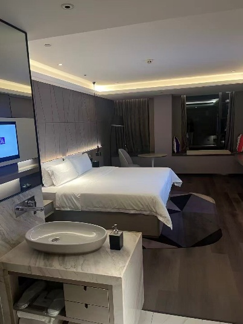
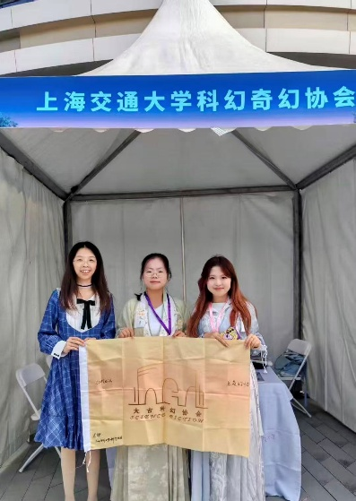
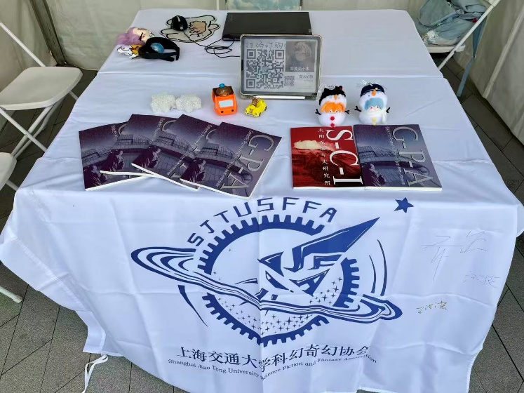
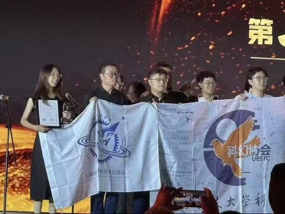
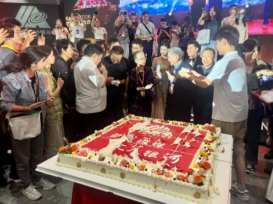
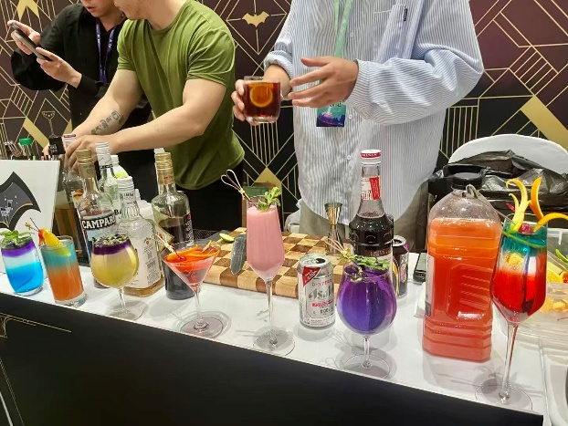
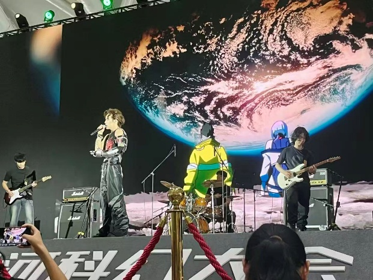
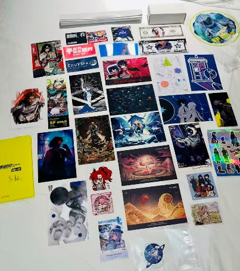

银河之夜
文 布谷
引子
提笔写这篇文章时，恰好是笔者第三次来到成都。距离下面要记述的去年九月2025银河科幻大会期间在成都的旅程，不过才短短半年出头，许多记忆却都已消散了。试着翻看着群聊消息和相册照片拾起一些回忆，希望记录下那两天的一个较为忠实的轮廓，但或许期间所遇的很多人实在无法详尽准确地记述，就先道一声抱歉了。
不得不提的是，在出发前我的心中其实是蛮愁云惨淡的。
一方面是当时是开学第一周，而出发那天我的课程从早到晚都满着，因此我不得不坐晚上出发、凌晨到达的飞机；而回来那天的晚上我原定有个校合唱团选拔室内团的考核，让本就拥挤的时间表雪上加霜。要请的假真多（悲）。
另一方面是我虽然混进了校内幻协的干事群，但自认只干过一些小活儿，并不像当时的社长、前社长、写作组组长等等很多群u一样推动过幻协的传承和发展；我没有自己的作品，也没有混过科幻圈。那么，各位重量级群u把这次也颇具分量的出行托付给我，便令我不得不感到很多分惭愧和感动了。
但是到底还是去了。现在想来，要感谢诸多机缘巧合和所有群友的信任包容，也要感谢老鼠干一样的我鼓起勇气做出了行动。
启程

还记得9月19号那天凌晨0：55才落地成都。虽然把心爱的水杯丢在飞机上了，但我们还是把它当作命运欲扬先抑的小花招吧。
和我接头的二厂老师不仅一直在酒店大堂等待我，还慷慨地报销了从机场到酒店的车费。上电梯到房间门口，看到帮我代领报到物资的兔头同学留下了可爱的小纸条。而当我终于躺在房间的大床上时，简直喜极而泣——也是住上soyo同款大house了。
初行动
那么大睡一觉后，便正式打响了第一天的战争。大概睡了六个小时的我，精神抖擞（并非）地去一楼囫囵吃了点东西，便和大家一起打车去了会场。会场的建筑很有设计感，层层叠叠而平行的分层结构像抹茶蛋糕，一楼的大草坪上是一块白色镂空文字“2025银河科幻大会”，颇有几分科技感。
走进一楼的主大厅，我被两个区域捕获了一会儿。先是京东图书x科幻世界的展览，一位金发的女士通体穿着白色铠甲，脸上还有泛着彩色荧光的电路纹样，正扮作机器人和孩子们打招呼；她的右边是红色马甲的京东小黑色机器人。当时觉得有趣极了：在那些身高不到京东小机器人的孩子们眼中，左边那位高高的机器人姐姐会是真的机器人吧。而当他们长大了，或许像那样仿真的机器人就真的已经问世了。讨要了一张合照后，我往右走了一小段来到了各个ip的展板区。这块没什么人，我在新世纪福音战士的大板前驻足，抓着我的绫波丽和明日香雪人娃娃拍了一张照片，便匆匆离开。
就这样又紧张又松弛地在九点来到了社团摆摊的区域，没想到我到得竟然算比较早的。摆摊的小棚子设计得很好，是三面用白色帷幕隔开，一面敞开面向走道的方形小帐篷，尖顶，很好地遮了阳，可惜依然非常热。里面是一张白色桌子、三把椅子和一个弥足珍贵的插座，多次挽救了我手机平板岌岌可危的电量。我把带来的五六本社刊和一些自带的小装饰摆好，再用ipad投放了一个简要的二维码表情包画面，便算是布置好了。至于社旗——作为桌布的延伸，自然地垂在桌前，让这个小破摊子有了一点官方的气息。
当时只有我和隔壁不远的哈工大思飞的硫酸铜同学摆好了摊，于是我们进行了友好的会晤与交谊。遗憾的是我并没有带任何社团物料，只带了一些自己采买的明信片，让我和她交换时颇有些窘迫和抱歉；但她显然没有在意这点小事，还很慷慨地把我拉进了思飞的QQ群（可惜社恐的我在里面一句话也不敢说哈哈）。
不一会儿，周围的摊位陆陆续续摆起来了，其中让我印象最深之一的是武汉大学科幻协会。原因无他，他们的桌子上摆满了海报和物料。令我非常惊喜的是，也有了很多游客来访问我们的小摊，并且时不时就翻阅并赞叹我们的社刊。虽然两天总计也就卖出去几十本（我甚至忘记有没有破百了，似乎是没有），但还是让我感到我有了一点用处，嘿嘿！除此之外，唯一可以多着墨一句的大概便是全员穿着汉服来找我合影的太古科幻协会，她们看起来朝气蓬勃、活力满满，让我这个穿着睦子米常服连衣裙都热得哈气的人不解又羡慕。


摆摊的时光平静如水，几乎没有什么别的波澜可叙。中午十二点，我们一起打车回酒店吃午饭，第一天的上午就这样过去啦。
排队与签名的螺旋
第一天下午是最火爆的签售环节，集齐四大天王的签名并向他们赠送社刊、召唤神龙便成了我给自己定的小目标。
已经不记得在各场签售中排队多久了，只记得天气很热，汗水哗哗，还好有东华科幻协会的两位同学和我互相帮忙看守摊子、排队和帮对方拍照。我去排的签售大概是三场。记得韩松带着黑色鸭舌帽和口罩，不怎么抬头，神色冷峻；何夕总是时不时抬头露出一个疲惫的微笑；杨潇老师穿着旗袍，专注而认真，气质很好；谭松老师则会在每个人的书上画一个可爱的小动物再签名，可惜我带的是社旗，时间也不够了，便没有作画……
于我来说，其实在刘慈欣带来的震撼前，最早为我敲开中文科幻大门的作家是王晋康。我在初一时先读了他的《水星播种》和《七重外壳》的电子书，从此便一发不可收，每次去新华书城都多了一个驻扎点。当时十三岁的我怎么会想到，在八年后我会有机会亲眼见到他并且和他合影呢。
怀着这样激动的心情，到了跟前却说不出来什么了——毕竟也许到场的每一位读者都这样热烈地喜欢过他的文字吧，而我又有什么特别呢？但是，当我拿出社旗给他签名时，他微笑着抬头看向了我，然后告诉我，他也是交大的，西安交通大学。他似乎是思考了几秒钟，然后拿起电容笔，在我的ipad上签下字，说：祝母校的科幻协会越来越好。
终于结束了几轮签名，又回去摆摊。等到下午大概三点半时，最后一场签名启动了。这次是“占据半壁江山”的刘慈欣老师的签售，于是队伍像蜗牛壳一样盘旋，几乎占满了整个一楼的广场后，还要再绕出去很远，直到一两百米开外的我们的摊位后面。签售也非常严格，不仅一人只能拿一张签名券、签一次名，而且两边都有工作人员提前帮他摊好书籍，不允许任何其他要求以耽误签售时间。我因此战战兢兢了许久，生怕不允许请他给社旗签字。但最后还是非常丝滑地成功了，他接过我递过的社刊后便自然地接过了社旗，慈祥地签下了自己的名字。当时觉得自己真幸运呀。
开香槟！
这天晚上回去后，等待我们的是二厂老师牵头的美味火锅。可惜我换完衣服后到得比较晚，坐的那一桌全是辣锅，导致我能吃的不多。但是听着另外几人的聊天吹水、传奇经历，也完全不虚此行。
吃完后我们一起来到了会场，我终于首次踏入了室内的大会议厅。银河之夜的灯光闪烁，座位前是层层叠叠的后脑勺和巨大的屏幕，让我有些恍惚。然而，手机里群u的直播吐槽和陪伴，二厂老师的悉心嘱托，又让我觉得温暖和快乐。
一个个奖项被颁出，直到那一刻，猝不及防被点名，灵机一动拿上社旗，然后拔腿就小跑向舞台。记得身边有人小声唤我，“快跑，去左前方上台，快去”；而主持人则用富有感染力的播音腔向大家做旁白，“看这些年轻人们跑得多快呀”。

上台前，我注意到接奖状和奖杯的话就没手拿社旗了，于是果断把它丢在了台阶不远处的地面上。果然，当聚光灯洒在身上，当刘慈欣老师把不管是物理意义还是非物理意义上都很沉重的奖杯和证书交到我手里时，我差点就要拿不动了，内心窃喜还好没把旗子带上来。身旁的东华大学倒是因为人手众多，所以显得游刃有余，三个人排排站展开了他们社团的大旗，让我有点微妙的羡慕。但是可能正是因为我这边人少，大刘老师颁完奖后自然地站在了我的旁边一起合照，hiahia，我的尾巴都要翘起来了。
紧接着，便听到主持人邀请所有被提名高校的社员带着社旗上来合影。我的脑子又短路了一秒钟——我双手都拿着东西，社旗一个人恐怕也展不开，咋办呢。万幸是我好歹之前灵机一动把社旗放在了离舞台不远的地方，要是还在我们的座位上的话，恐怕我现在开疾跑也赶不上吧。一秒后，脑子完美群控了我的四肢，在一片混乱到来前哒哒哒跑了下去，拿上旗子之后立马滚回热闹如菜市场的舞台，赶上了合照。
当然，在合照前我发现我还是拼尽全力无法展开我们的旗子，咋办捏，当然是临时抓壮丁。当时看也不看就问旁边一个小哥“你好，请问能帮我拉一下社旗吗？”等眼睛反应过来，和脑子一合计才发现那小哥居然是刘慈欣老师。好的，这下又多了一个壮举，感觉我下一秒就可以摇着花手螺旋上天了。

下台后，看着群u边欢呼雀跃边抱怨由于直播中断他们中间啥也没看到，心里真是五味杂陈。落座后不久，周围的同学们让我传阅奖杯和奖状，于是我便也顾不得五味杂陈了，忙着和他们一起小心地欣赏和拍照。此外，还有（应该是大佬的）交大校友对我们表示祝贺，二厂老师夸夸我居然无师自通地随身带着社旗，以及最后的切分超大蛋糕环节。总之，心跳在这些小小的互动中一点点平复下来，惊喜退潮后，我的小脑瓜里便全是“想着回酒店休息”这个念头了。
SF-ONLY
20号上午又是和昨天一样的摆摊环节，没什么深刻的记忆，便不多言了。事实上，这天活动的主要内容和高光其实全都集中在下午的SF-ONLY展和相关的签售上。
中午急匆匆吃完KFC之后，就因为担心错过入场时间而来到了二楼。这是我第一次参加同人展，不免有些忐忑和新奇。其实会场不大，大概是一两个篮球场大小。除了占据1/4的明信片区域，就是一块块小白桌拼接起来的学生社团和卖家的摊位，一个等待被唤醒的舞台，和一个高端中透露着昂贵之气的哥谭酒吧。
因为我去得太早，各个摊位几乎都还没有开始营业，因此我去貌美的自设明信片区逛了一会儿后，便盘腿坐在舞台前，等着节目开场了。



我没有玩过赛博朋克的游戏，只在朋友的推荐下看过动漫，非常喜欢它的主题曲。因此，得知这天会有强尼银手的配音演员的演出时，我非常兴奋地想这下真是来值了。果然，当吉他和鼓点让我的耳膜剧烈震动时，当台上的刘照坤老师和台下的我们一起呐喊“Let's start at the rainbow”时，当散场后鼓起勇气和超绝美丽的Lucy coser老师合照时，我都在想还是真来值了。
这之后，又是买书、排队签售、逛小摊子、欣赏物料……当晚上回到酒店后摊开打猎的收获时，还是有一种莫名其妙的成就感。人类这种生物真是奇怪啊，既需要意义感，又可以自行赋予一些奇怪的东西意义感。
尾声
没错，这么快就要到尾声了。有人问，老师老师，你怎么没去20号晚上的联谊呀？不好意思，因为我太累了真的很想睡觉（），咳咳。
因此，对于20号晚上发生的事情呢，我只能说我真的很爱吃干巴酸奶碗。这边外卖的这家还不错，但是没有我在上海吃过的一家的巧克力脆皮酸奶碗和另一家的青苹果奇异果酸奶碗好吃。
以及这床真软啊，这酒店真棒啊。
又有人要问，老师老师，那21号呢？如前文所言，我要滚回交大滑跪老师私密马赛了，所以竟然也没来得及去各处转转，直接打车就去了地铁站（哦，贫穷的我，为什么没想到能直接打车去机场呢，甚至其实这车钱也许还能报销）。
那么，尽管很担心是小学生记流水账，但是笔力和记忆所限，也就暂且写到这啦。（我也不知道有没有真的很想赶紧写完然后去看进击的巨人的成分在）。事实上，现在已经是七月末，离我第一次提笔又过去了小半年了，而我是身在济州岛的酒店躺着时，鬼使神差才打开了这个文档。
Time flies，咕咕。